VIP Photographer App: design decisions
Changes made to the Figma screens and the HTML demo, November 5 and 6, 2026. Each page gives the problem, the change, the rationale, the trade-off accepted, and old and new screenshots.
The rationale on each page is what was discussed in the design sessions, with Alan making the call. Anything that was a judgement, such as breaking consistency, is called out as a trade-off. Measurements are from the Figma frames and the demo at phone size (874 pt screen); the claim that the secondary actions are rarely used is Alan's and has not been measured.
| # | Change | Trade-off accepted | Decided by | Where |
|---|---|---|---|---|
| 1 | Header: primary button plus More menu | Urgent actions take two taps and are not labelled | Alan | Figma, demo |
| 2 | Header collapses on scroll | A quarter of the screen stays pinned; static, not animated | Alan | Figma, demo |
| 3 | No primary button: actions shown as buttons | Same actions are in a menu on some days and visible on others | Alan | Figma, demo |
| 4 | Icons on secondary actions | Decoration only; demo icons are look-alikes | Alan | Figma, demo |
| 5 | Add note first on the Notes tab | Non-leads get no explanation | Alan | Figma, demo |
| 6 | Section headings removed (demo) | Logged times card is unlabelled | Alan | Demo |
| 7 | Map icon on Location row (demo) | None found | Alan | Demo |
| 8 | Bordered button contrast | Light cards show outline only; override on two buttons, not the library | Alan | Figma, demo |
| 9 | White label on green primary (Dark) | 4.60:1 is a narrow pass; override on 68 labels | Alan | Figma |
Not yet tested: Dynamic Type at the largest sizes, VoiceOver, and a Figma frame for the assignment-day screen with the menu. Open library changes are in the Library change requests project doc.
1. Assignment header: primary button plus one More menu


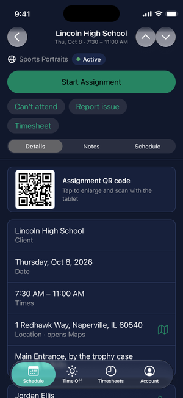

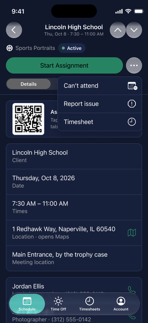
2. Header collapses on scroll


3. No primary button: show the actions as buttons
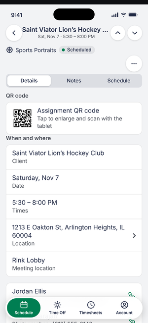
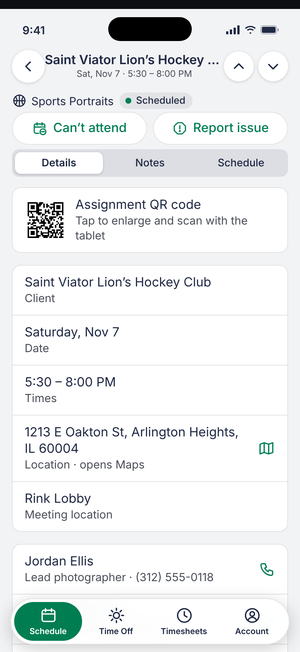
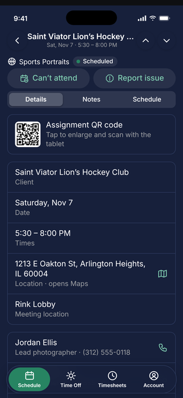


4. Icons on the secondary actions
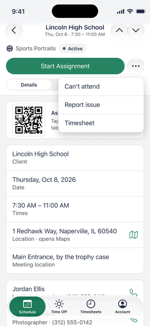

5. Add note first on the Notes tab


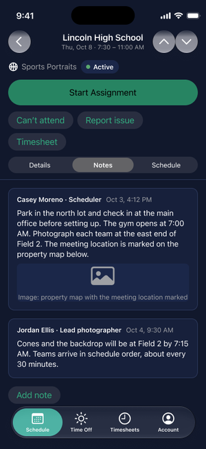
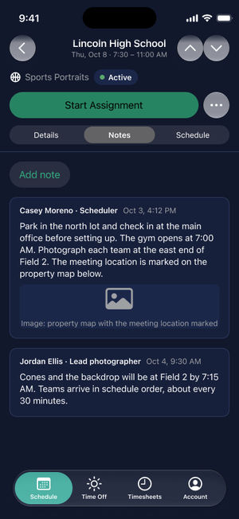
6. Demo: section headings removed on the Assignment tabs
7. Demo: map icon on the Location row
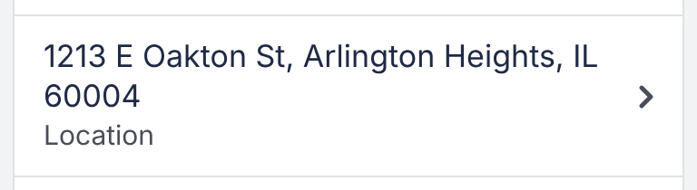
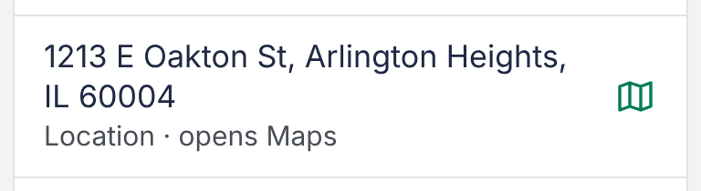
8. Button contrast: bordered fill
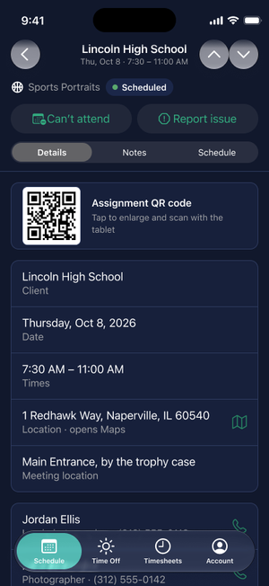
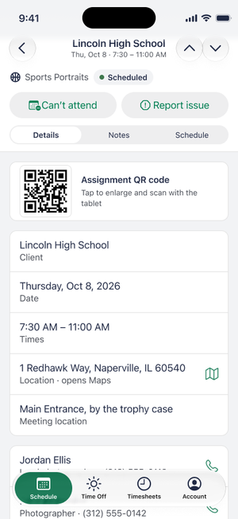

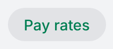
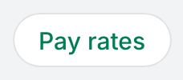
9. Dark mode: white label on the green primary button
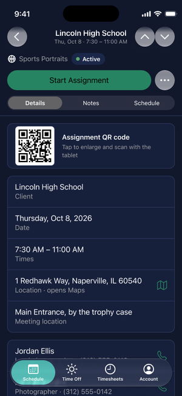